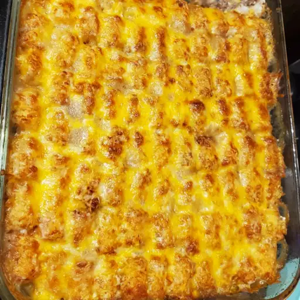

Tater tot casserole

Description
This tater tot casserole recipe is quick, easy, and incredibly satisfying. Made with simple and cheap ingredients, it's sure to please everyone at your dinner table.
Ingredients
- 1 pound ground beef
- 1 (10.5 ounce) can condensed cream of mushroom soup
- salt and ground black pepper to taste
- 1 (16 ounce) package frozen tater tots
- 2 cups shredded Cheddar cheese
Steps
-
Gather the ingredients. Preheat the oven to 350 degrees F (175 degrees C).
- Heat a large skillet over medium-high heat. Cook and stir ground beef in the hot skillet until completely browned and crumbly, 7 to 10 minutes. Stir in condensed soup; season with salt and black pepper.
- Transfer beef mixture to a 9x13-inch baking dish; layer tater tots evenly on top and sprinkle with Cheddar cheese
- Bake in the preheated oven until tater tots are golden brown and hot, 30 to 45 minutes.
Return to top